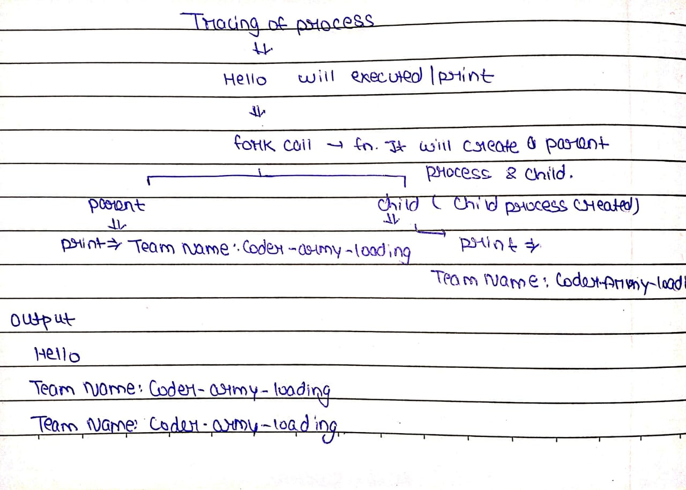

#include<stdio.h>
#include<unistd.h>
int main() {
printf("Hello\n");
fork();
printf("Team Name : Coder-army-loading\n");
return 0;
What will be output?Guess our team will tell?

Output
Hello
Team Name : Coder-army-loding
Team Name : Coder-army-loding